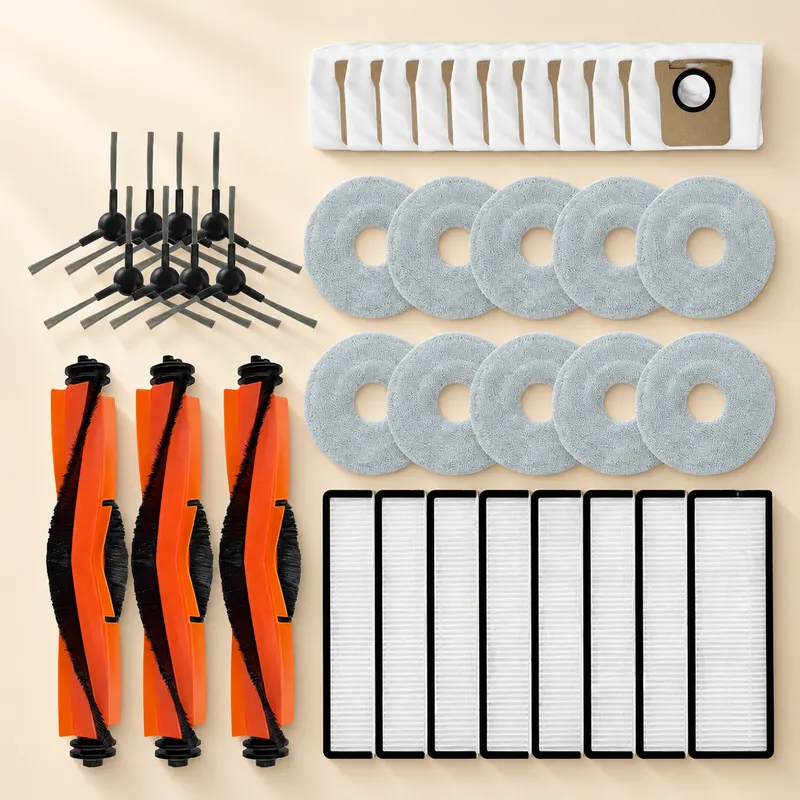

에코백스 (ECOVACS)
샤오미 로봇청소기 X20 MAX 1년 세트 구성과 브러시·필터 관리법
글·구성: 제이상점 · 기종별 소모품 규격 요약본 (상세 사진과 관리 전문은 아래 네이버 블로그 모바일 원문에서 확인하실 수 있습니다.)

핵심 관리 · 선택 체크포인트
- 샤오미 로봇청소기 X20 MAX는 오렌지색 V자 메인브러시와 가로로 긴 슬림형 블랙 프레임 필터, 크라프트지 칼라 더스트백을 사용합니다.
- 세탁실 트레이와 베란다 건조대에서 브러시·물걸레 말리기: 물걸레 청소 후 오렌지색 V자 메인브러시와 원형 그레이 물걸레 패드, 슬림형 블랙 프레임 필터는 세탁실 상판 트레이나 햇살이 드는 베란다
- 1년 패키지 구성품과 기종별 옵션 확인표: 원목 서랍 정리함이나 다용도실 선반 바구니에 크라프트 칼라 더스트백과 3암 사이드브러시, 슬림형 필터, 원형 물걸레를 모아 두면 교체 주기에 맞춰 간편하게 꺼내 쓸 수 있습니다.
- 서랍 칸막이 수납과 선반 바구니로 여분 재고 파악하기: 부품별로 서랍 칸을 나누어 두면 필터나 더스트백이 몇 개 남았는지 한눈에 파악할 수 있습니다.
- 필터 건조 시간과 해외직배송 안내도 미리 확인해 두세요: 물세척한 필터를 말릴 때 챙겨야 할 기준은 필터 세척 후 24시간 건조·재장착 안내에서, 해외직배송 상품 주문 시 참고할 점은 소모품 해외직배송 안내 가이드에서 자세히 살펴보실 수 있습니다.
부품 규격 · 점검 기준표
| 확인 항목 | 부품·옵션 특징 | 점검·선택 포인트 |
|---|---|---|
| 오렌지 메인·사이드 브러시 | 오렌지 V자 브러시(블랙 모) / 3암 블랙 사이드브러시 | 브러시 홈에 낀 머리카락 정리 및 양끝 회전축 점검 |
| 원형 물걸레·슬림형 필터 | 그레이 원형 극세사 패드 / 긴 직사각형 블랙 프레임 필터 | 세척 후 완전 건조 및 여분 필터와 교대 장착 |
| 크라프트 칼라 더스트백 | 브라운 카드보드 칼라 부직포 더스트백 | X20 MAX·X20 PRO 등 상세페이지 호환 모델·옵션 확인 |
자주 묻는 질문 (FAQ)
Q. 샤오미X20MAX의 오렌지 메인·사이드 브러시 규격과 관리 기준은 무엇인가요?
A. 오렌지 V자 브러시(블랙 모) / 3암 블랙 사이드브러시 규격을 사용하며, 브러시 홈에 낀 머리카락 정리 및 양끝 회전축 점검 기준으로 점검·교체하면 청소 효율을 안정적으로 유지할 수 있습니다.
Q. 샤오미X20MAX의 원형 물걸레·슬림형 필터 규격과 관리 기준은 무엇인가요?
A. 그레이 원형 극세사 패드 / 긴 직사각형 블랙 프레임 필터 규격을 사용하며, 세척 후 완전 건조 및 여분 필터와 교대 장착 기준으로 점검·교체하면 청소 효율을 안정적으로 유지할 수 있습니다.
Q. 샤오미X20MAX의 크라프트 칼라 더스트백 규격과 관리 기준은 무엇인가요?
A. 브라운 카드보드 칼라 부직포 더스트백 규격을 사용하며, X20 MAX·X20 PRO 등 상세페이지 호환 모델·옵션 확인 기준으로 점검·교체하면 청소 효율을 안정적으로 유지할 수 있습니다.